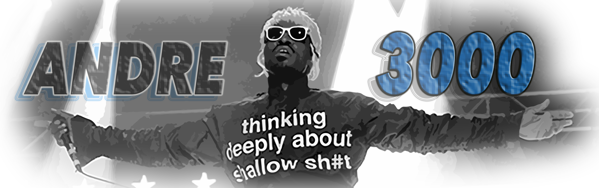

Born in 1975 in Atlanta, Ga, André 3000 began performing in his teens with a friend as 2 Shades Deep. They got a record deal and changed their name to OutKast. Their first single, 1993's "Players' Ball," was a Christmas song, and it stayed at No. 1 on the rap charts for six weeks. By the end of the decade, OutKast was a known force in the Hip Hop genre, and their single "Hey Ya!" cemented the group's reputation. The song went on to be named one of Rolling Stone's top 500 songs of all time, and OutKast collected six Grammy Awards along the way. Soon after, Andre 3000 began acting, appearing in several movies and on television, while also writing music for both. His latest effort is portraying Jimi Hendrix in the 2013 biopic All Is by My Side.
